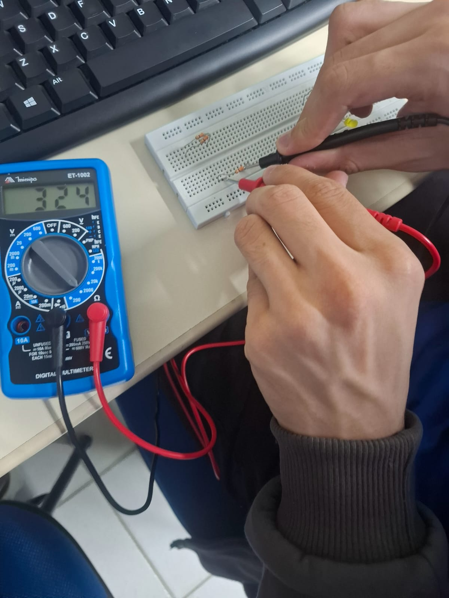
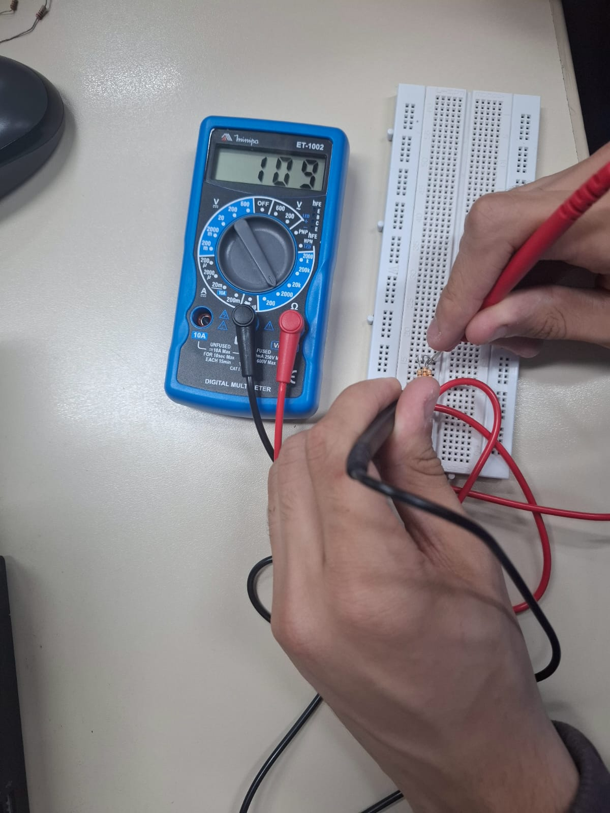
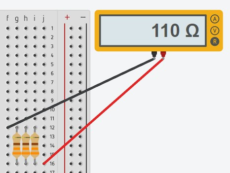
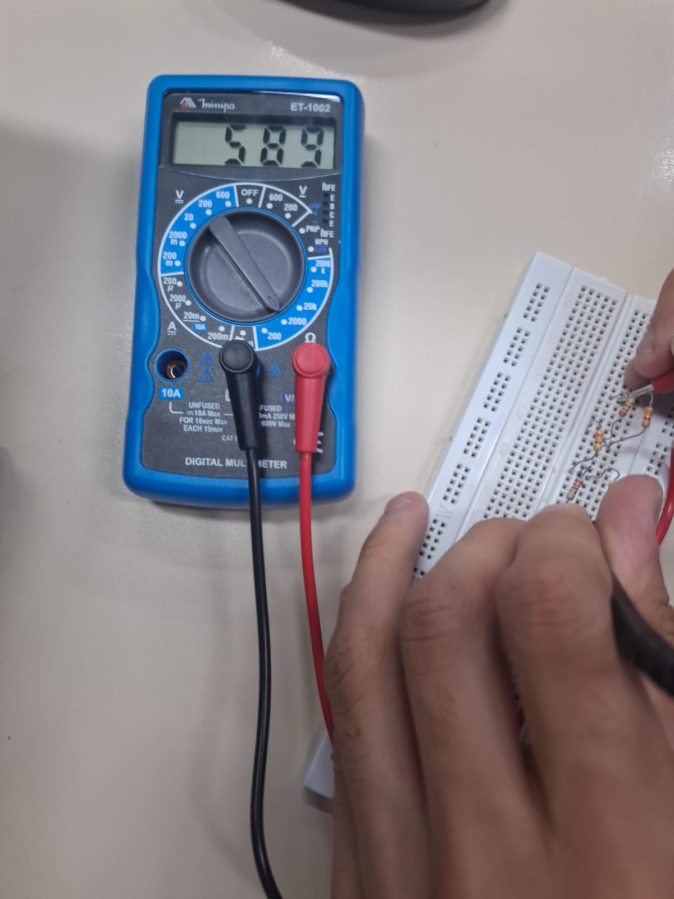
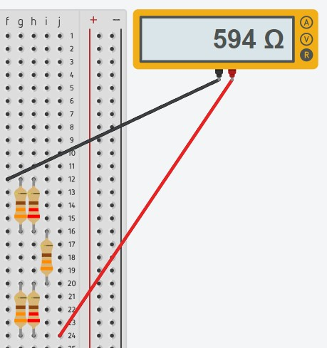

Medição de um resistor
Nessa foto estamos testando para ver se o resitor esta funcionando,
e podemos ver tambem que no multimetro existe uma faxa de erro

Nessa foto estamos testando para ver se o resitor esta funcionando,
e podemos ver tambem que no multimetro existe uma faxa de erro
A associação em serie é quando tem varios resistores em seguida,
fazendo a eletricidade ultrapassar todos
A associação em paralelo funciona de modo em que ela distribui a energia entre todas
 Ela é a mistua da associação paralela e em serie
 